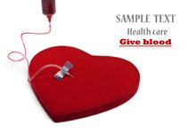

Uzaktan Hasta Takibi
Teknolojinin gelişmesi ile beraber sağlık alanında da önemli gelişmeler yaşanıyor. En göze çarpan gelişmelerden birisi "Uzaktan Hasta Takibi".Bu teknoloji ile kliğine gitmeden ölçümler yapılıyor ve doktora iletiliyor.
- 
Kalp Ritmi Takibi
Uzaktan Hasta Takibi yöntemi ile , kalp atış(nabız) bilgilerinizi klinik ortamına gönderebilirsiniz. Bu bilgiler kayıt altına alınıo analiz edilebilir. Böylece mevcut bir kalp problemi olup olmadığı kontrol edilebilir.Ayrıca ilerde ortay açıkabilecek sorunlar hakkında da bilgi sahibi olunabilir.
Hizmetlerimiz
Özel üretim saatlerimizi kullanarak, nabız ve vucut sıcaklığı bilgisini kaydedebiliriz. Yine bu bilgilerin analizini yaparak , kardiyovaskuer sisteminizin ne kadar sağlıklı çalıştığı bilgisini elde edebiliriz.Kontrol gerektiği durumlarda hastaneye mürecat etmeniz konusunda uyarılırsınız.
Diğer Projeler
Mevcut sistemimize farklı ölçüm değerlerini eklemek üzere çalışmalarımız devam etmektedir. Üzerinde çalışma yapılan ölçümler tansiyon, ağırlık ve kan şekeridir. Bu ölçümlerinde sisteme katılması ile birlikte tüm sonuçların analizi birlikte yapılacal ve daha sağlıklı sonuçlar alınacaktır.